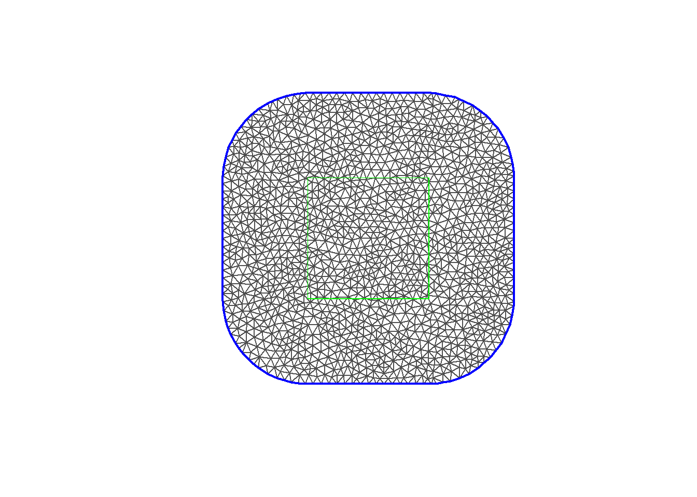
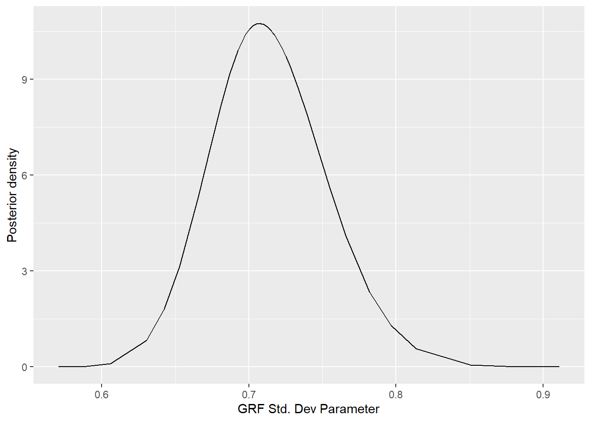
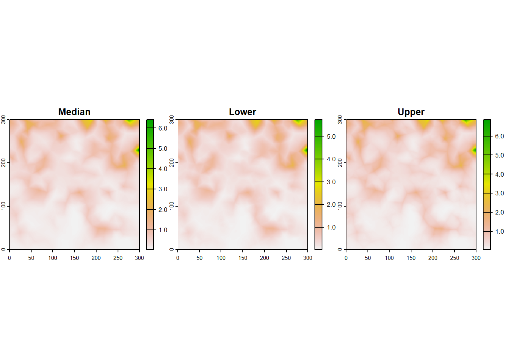
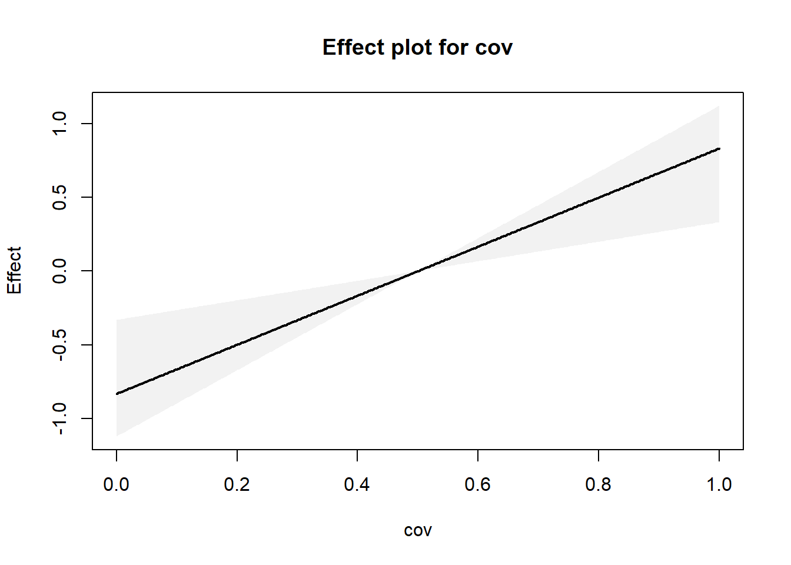
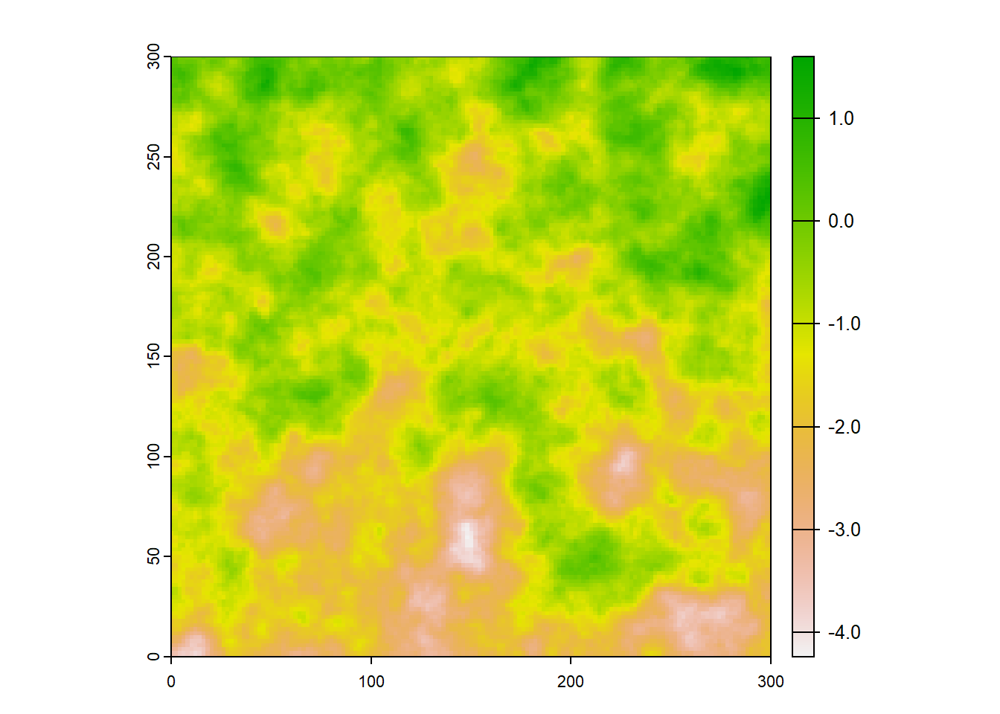
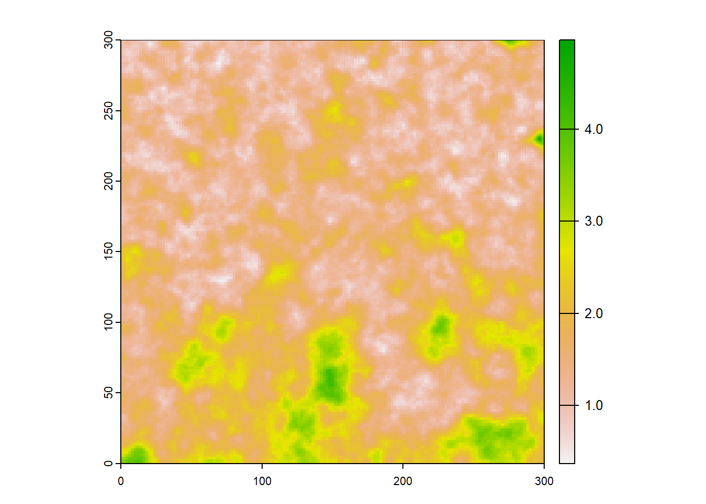

Loading required package: sf
Linking to GEOS 3.9.3, GDAL 3.5.2, PROJ 8.2.1; sf_use_s2() is TRUE
Loading required package: terra
terra 1.7.55
Attaching package: 'terra'
The following object is masked from 'package:tidyr':
extract
Loading required package: ggpubr
Attaching package: 'ggpubr'
The following object is masked from 'package:terra':
rotate
Loading required package: RISDM
Loading required package: DescTools
Warning: package 'DescTools' was built under R version 4.3.3
Loading required package: spatstat
Loading required package: spatstat.data
Loading required package: spatstat.geom
spatstat.geom 3.2-7
Attaching package: 'spatstat.geom'
The following objects are masked from 'package:ggpubr':
border, rotate
The following objects are masked from 'package:terra':
area, delaunay, is.empty, rescale, rotate, shift, where.max,
where.min
Loading required package: spatstat.random
spatstat.random 3.2-1
Loading required package: spatstat.explore
Loading required package: nlme
Attaching package: 'nlme'
The following object is masked from 'package:dplyr':
collapse
spatstat.explore 3.2-5
Loading required package: spatstat.model
Loading required package: rpart
spatstat.model 3.2-8
Loading required package: spatstat.linnet
spatstat.linnet 3.1-3
spatstat 3.0-7
For an introduction to spatstat, type 'beginner'
Loading required package: Metrics
Warning: package 'Metrics' was built under R version 4.3.3
Attaching package: 'Metrics'
The following object is masked from 'package:spatstat.explore':
auc
Loading required package: scoringutils
Warning: package 'scoringutils' was built under R version 4.3.3
Note: scoringutils is currently undergoing major development changes (with an update planned for the first quarter of 2024). We would very much appreciate your opinions and feedback on what should be included in this major update: https://github.com/epiforecasts/scoringutils/discussions/333
wd <-getwd()
Load the occurence data
PO <-read.csv(paste0(wd,"/output/po_all_no_thin.csv"))names(PO) <-c("x", "y")# Load presence-absence data for model fittingPA_fit <-read.csv(paste0(wd,"/output/pa_a.csv"))PA_fit <- PA_fit %>%mutate(area =0.02)# Load presence-absence data for model validationPA_val <-read.csv(paste0(wd,"/output/pa_b.csv"))PA_val <- PA_val %>%mutate(area =0.02)# Create a raster of the study domainPO_vect <-vect(PO, geom =c("x", "y"))# PO_vect_buffered <- buffer(PO_vect, width = 0.3)
Initial mesh assessment will be via: 1. Plotting mesh and looking at triangle shapes 2. Checking number of vertices in mesh to estimate computation time 3. Fitting a simple INLA model and viewing the posterior spatial scale of the range parameter
1. RISDM defaults
Still to be decided is the dep.range parameter, the expected range over which spatial autocorrelation is expected to drop to ~0.1 (near zero). Mostly independent.
mesh.default <-makeMesh(cov,max.n =c(5000, 2500), # Default c(500,200)dep.range =NULL, # In raster projection units, default is 1/3 diagonal length of raster extentexpans.mult =1.5, # Default, 1.5 x dep.rangemax.edge =NULL, # Default c(0.2, 0.5)*dep.rangecutoff =NULL, # Default 0.2*max.edge1offset =NULL, # Default is dep.rangedoPlot =TRUE )
No range of dependence specified (dep.range argument). Assuming that this range is 1/5 of the extent of the raster. Maybe(?) this isn't a good value. Please check.
No max.edge given. Assuming that the inner max.edge is 1/5 of spatial dependence range (dep.range argument) and outer max.edge is 1/2 spatial dependence range.
No cutoff given. Assuming that points less than min( max.edge) / 5 are considered to be the same.
No offset given. Assuming that the outer domain is approximately an expansion of the inner domain by the amount of a spatial dependence range.

2. Changing values of dep.range or other parameters as need be
Checking mesh with RISDM function
checkMesh(mesh.default)
If mesh is good then inner domain should consist of triangles that are:
*Visually quite uniform (Left plot),
*Be comprised of relatively homogeneously sized triangles (middle plot), and
*Be comprised of triangles that are not weirdly shaped (most like equilateral triangles, right plot).
Checking computation time based on rule of thumb from Bakka (2017)
(mesh.default$n)^(3/2)
[1] 60081.12
Fitting a simple INLA model for mesh checks
# m.default$summary.hyperpar$mean # Posterior mean estimate for the range
Checking the mesh for boundary effects
Assessment after model fitting is required to test mesh, to see if boundary effect is avoided that causes variance to be 2x larger at border (Lindgren 2012; Lindgren and Rue 2015).
Do so by plotting the standard deviation of the random effect.
Model specification
Default is that all covariates are standardised (transformed linearly - subtracting mean and dividing by standard deviation) so covariate will have zero mean and standard deviation of one.
Specification of this formula parallels almost precisely as one would do for any glm-like modelling process – see the details section from ?glm for more information about forms accepted.
#linear in variable 1 and 2# dist.form <- ~0 + var1 + var2#Linear with single covariatedist.form <-~0+ cov
Observation bias for PO data
*Note - could try a negative exponential relationship here like sampbias
The priors are specified via the control list argument and describe Gaussian distributions.
The prior.mean is a single scalar giving the prior expectation of all the model’s effects. This includes all intercepts and all covariate effects for all the data types.
Almost always, prior.mean will be zero, indicating that the effect has a priori equal chance of being positive or negative.
The prior variation for the covariate effects are split into two types: those for intercepts and those for covariate effects.
Specified through standard deviation.
By default the sd for the intercepts is very large (1000) and that for the covariate effects is large (10).
Covariates have been scaled prior to fitting the model.
The specification of the distribution of the random effects depends on two parameters: the standard deviation of the effects, and the spatial range of their dependence.
Both these parameters require a prior distribution to be specified, and RISDM, like INLA, follows Simpson et al. (2017) by using complexity priors. These priors are defined by defining the prior chance that the parameter falls above (for prior standard deviation) or below (for spatial range) specified values.
For the gamba grass example, it may be reasonable that the standard deviation has probability of 0.1 (10% chance) of being above 5. We feel that this is a vague prior for random effects on a log-link scale. Likewise, a vague prior for spatial dependence could be that there is a probability of 0.1 that the range is less than 1km. For Gamba Grass example dep.range = 3km.
my.control <-list(coord.names =c("x", "y"),prior.mean =0,int.sd =1000, # Intercept standard deviationother.sd =10, # Covariate effect standard deviationprior.range =c(1, 0.1), # Prior chance 10% that parameter falls below range of 1kmprior.space.sigma =c(5, 0.1)) # Prior chance 10% that parameter falls above SD of 5
$integrated
$DISTRIBUTION
mean sd 0.025quant 0.5quant 0.975quant
cov 0.4650757 0.08952487 0.2761972 0.4694711 0.6289253
$PO_BIAS
mean sd 0.025quant 0.5quant 0.975quant
PO_Intercept -1.114501 0.114509 -1.341406 -1.114621 -0.8868715
$PA_ARTEFACT
mean sd 0.025quant 0.5quant 0.975quant
PA_Intercept 2.663817 0.1559403 2.343137 2.668294 2.958307
$SPATIAL
mean sd 0.025quant 0.5quant 0.975quant
Range for isdm.spat.XXX 43.0363566 5.94063827 33.0743618 42.4611017 56.4038203
Stdev for isdm.spat.XXX 0.7309622 0.04498835 0.6498063 0.7284744 0.8268131
$marg.lik
[1] -71446.21
attr(,"class")
[1] "summary.isdm"
$PO
$DISTRIBUTION
mean sd 0.025quant 0.5quant 0.975quant
cov 0.654441 0.09024531 0.47838 0.6536678 0.834944
$PO_BIAS
mean sd 0.025quant 0.5quant 0.975quant
PO_Intercept -1.119605 0.1055752 -1.328638 -1.119586 -0.9106643
$SPATIAL
mean sd 0.025quant 0.5quant 0.975quant
Range for isdm.spat.XXX 41.0107936 5.12083538 32.1027093 40.6132920 52.26754
Stdev for isdm.spat.XXX 0.7141446 0.03915142 0.6422957 0.7123669 0.79650
$marg.lik
[1] -71088.41
attr(,"class")
[1] "summary.isdm"
Residual Plots
Interpretation: At lower predicted intensity values the residuals are variable, with more underprediction and overprediction. The residuals aren’t spatially autocorrelated which suggests the random field is working?
map(mod.list, function(x) {ggplot(data =as.data.frame(x$mod$marginals.hyperpar$`Range for isdm.spat.XXX`)) +geom_line(aes(x = x, y = y)) +ylab ("Posterior density")+xlab("GRF Range Parameter")ggplot(data =as.data.frame(x$mod$marginals.hyperpar$`Stdev for isdm.spat.XXX`)) +geom_line(aes(x = x, y = y)) +ylab ("Posterior density")+xlab("GRF Std. Dev Parameter") })
$integrated
$PO

Prediction
This method proceeds by taking posterior draws of the parameters, using INLA’s inla.posterior.sample function, and then predicting using the sampled parameters into a user-supplied raster stack. In this routine, the spatial random effects are treated the same as the parameters.
The intensity is the “expected number of individuals within a raster cell at each of the raster’s locations”
# Run for intensity prediction firstfor(i in1:length(mod.list)) { mod.list[[i]]$preds <-predict(mod.list[[i]],covars = cov,S =30, intercept.terms ="PO_Intercept",type ="intensity")plot(mod.list[[i]]$preds$field[[1:3]], nc =3) }

Now on probability scale. Probability is a non-linear transformation of the intensity, dependent upon the intercept value chosen.
Create a raster layer with a constant value for the habitatArea offset.
Predict, specifying which terms should be included.
Plot
To get the response plot, just pulls the median, lower, and upper from the prediction function and then plots their relationship with cov.
# Adding a temporary cell area layercov_inter <-c(cov, cov[[1]]) names(cov_inter) <-c(names(cov), "tmp.habiArea") # Rename the new covariatevalues(cov_inter$tmp.habiArea) <-1posterior_plots <-map(mod.list, function(x) { interpPreds <-predict(x, covars=cov_inter,habitatArea="tmp.habiArea", S=30,includeFixed="cov",# Include fixed effectincludeRandom=FALSE, type="link") # Difference is you use type = "link"# compile covariate and predictionpred.df <-as.data.frame(cbind(cov =values(cov$cov),values(interpPreds$field[[c("Median", "Lower", "Upper")]]))) # Plotpred.df <- pred.df[!is.na(pred.df$cov),]pred.df <- pred.df[order(pred.df$cov),]matplot(pred.df[,1], pred.df[,2:4], pch ="", xlab ="cov", ylab ="Effect",main ="Effect plot for cov")polygon( x=c( pred.df$cov, rev( pred.df$cov)),c(pred.df$Upper, rev(pred.df$Lower)),col=grey(0.95), bor=NA)lines( pred.df[,c("cov","Median")], type='l', lwd=2)})

Validate with independent Presence/Absence data
First, extract predictions from locations of validation data
Then calculate prediction accuracy with the Brier Score
Using the median posterior prediction of probability of presence per cell. Using the Brier score via the package “DescTools”.
imap(mod.list, function(x, y) {# Extract the median prediction for each cell that has validation dataval.med <-extract(x$preds.probs$field$Median, PA_val[,1:2], xy = T)# Add the validation data P/A into the dataframeval.med <- val.med %>%mutate(presence = PA_val$presence) print(paste0("Brier Score for ", y, ": ", DescTools::BrierScore(resp = val.med$presence,pred = val.med$Median)))})
[1] "Brier Score for integrated: 0.115117134096897"
[1] "Brier Score for PO: 0.114830827906386"
$integrated
[1] "Brier Score for integrated: 0.115117134096897"
$PO
[1] "Brier Score for PO: 0.114830827906386"
Validate with ‘true’ simulated data
First, extract ‘true’ intensity values
Code modified from Simmonds et al. (2020). Will be the intensity of each grid square.
**Note - need to fix so that it’s the median intensity, right now I think it’s the mean
Then calculate prediction accuracy with the correlation, mean absolute error of difference, and root mean square error
Then calculate the Interval Score Using the posterior’s lower and upper 95% confidence limits.
# Load the original intensity valuesmypath <-getwd()load(file =paste0(mypath, "/output/nhpp.rdata"))# Access attribute (Lambda) of lg.s object and create Lam Lam <-attr(lg.s, 'Lambda') # Get the (v) log intensity values (expected number of points per unit area)rf.s <-log(Lam$v)# Extract abundance values by point for truthdata <- rf.sgrid <-rast(ext(cov), resolution =res(cov),crs =crs(cov)) # Extract raster cell coordinatesxy <-xyFromCell(grid, 1:ncell(grid))# Create a data frame with the coordinatesgrid_expand <-data.frame(x = xy[,1], y = xy[,2])grid_expand$abundance <- data[Reduce('cbind', nearest.pixel( grid_expand[,1], grid_expand[,2],im(data)))] # Converting to an image pixel so it can be processed by the nearest.pixel functiontruth_grid <-rast(grid_expand, crs =crs(cov))plot(truth_grid)

imap(mod.list, function(x, y) {# Pull out the mean intensity prediction for each cellmean.int.pred <- x$preds$field$Meandifferences <- mean.int.pred - truth_gridplot(differences)# Metrics from Simmonds et al. # Compare the predicted intensity to the true intensity print(paste0("Correlation:", cor(as.vector(mean.int.pred), as.vector(truth_grid))))print(paste0("MAE of difference for ", y, ": ", mean(abs(as.vector(differences)))))print(paste0("Root Mean Square Error for ", y, ": ", Metrics::rmse(actual =as.vector(truth_grid), predicted =as.vector(mean.int.pred)))) ### Calculating the Interval Score #### Pull out the lower and upper bounds of the predictionlower.int.pred <- x$preds$field$Lowerupper.int.pred <- x$preds$field$Upper## Function to calculate a different quantile# #Extract posterior samples# samples <- m.int$preds$cell.samples %>% # # # Function to calculate x% quantiles of each row# calculate_quantiles <- function(row) {# quantiles <- quantile(row, c(0.025, 0.975))# return(quantiles)# }# # # Apply the function to each row of the matrix# quantiles_per_row <- t(apply(samples, 1, calculate_quantiles)) interval_score <-interval_score(true_values =as.vector(truth_grid), lower =as.vector(lower.int.pred), upper =as.vector(upper.int.pred),interval_range =95,weigh =TRUE)print(paste0("Sum of Interval Score for ",y, ": ", sum(interval_score)))print(paste0("Mean of Interval Score for ", y, ": ", mean(interval_score)))# plot(interval_score)})

[1] "Correlation:0.793250109232799"
[1] "MAE of difference for integrated: 1.62485337635764"
[1] "Root Mean Square Error for integrated: 1.73375231770304"
[1] "Sum of Interval Score for integrated: 141108.008991409"
[1] "Mean of Interval Score for integrated: 1.56786676657122"
[1] "Correlation:0.793282059832717"
[1] "MAE of difference for PO: 1.62627396346221"
[1] "Root Mean Square Error for PO: 1.73477582608214"
[1] "Sum of Interval Score for PO: 141222.931546213"
[1] "Mean of Interval Score for PO: 1.56914368384681"
$integrated
[1] "Mean of Interval Score for integrated: 1.56786676657122"
$PO
[1] "Mean of Interval Score for PO: 1.56914368384681"